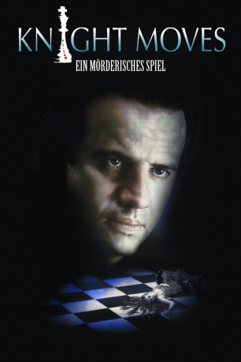
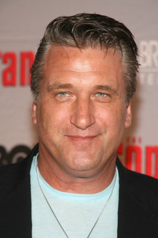
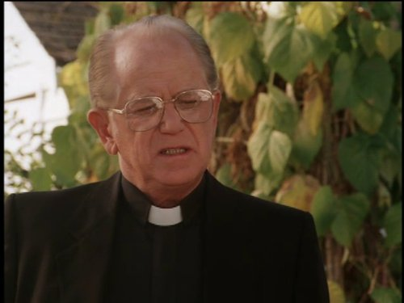

#9140 Knight Moves
 
 IMDB-Wertung: 6.1 / 10
IMDB-Wertung: 6.1 / 10  Metascore: 0
Metascore: 0 
Zug um Zug liefern sich die beiden Schachgroßmeister ein nervenzerreißendes Duell. Schachmatt – der König stürzt, während die junge Frau im Keller von einem Dolch durchbohrt wird. Der Killer, ein Wahnsinniger, ein Genie – mit brillant ausgedachten Rätseln kündigt er jeweils seine nächste Tat an. Die Zeit rast – weitere Morde geschehen. Es gilt, die blutigen Mordstrategien des Killers zu erkennen und ihn in diesem Spiel um Leben und Tot ein für allemal schachmatt zu setzen.
Jahr: 1992
Dauer: 116 Minuten
FSK: 16
Land: USA Studio: InterStar ReleasingTonspuren: DTS - ,
Untertitel:
Auflösung: 1080p (1920x816) Größe: 10065 MB
Genre: Thriller, Drama, Krimi, Mystery
Regisseur: Carl Schenkel
Drehbuch: Brad Mirman
Soundtrack: Anne Dudley
Darsteller:
 Frank C. Turner als Doctor
Frank C. Turner als Doctor Don Thompson als Father
Don Thompson als Father- Megan Leitch als Mother
 Christopher Lambert als Peter Sanderson
Christopher Lambert als Peter Sanderson Alex Diakun als Grandmaster Lutz
Alex Diakun als Grandmaster Lutz Ferdy Mayne als Jeremy Edmonds
Ferdy Mayne als Jeremy Edmonds Katharine Isabelle als Erica Sanderson
Katharine Isabelle als Erica Sanderson- Mark Wilson als Newscaster
- Kehli O'Byrne als Debi Rutlege
-  Daniel Baldwin als Det. Andy Wagner
 Tom Skerritt als Capt. Frank Sedman
Tom Skerritt als Capt. Frank Sedman Blu Mankuma als Steve Nolan
Blu Mankuma als Steve Nolan-  Walter Marsh als Chess President
 Diane Lane als Kathy Sheppard
Diane Lane als Kathy Sheppard- Elizabeth Baldwin als Christie Eastman
- Dwight McFee als Technician
- Pat Bermel als Officer #1
 Rebecca Toolan als Mayor
Rebecca Toolan als Mayor Marilyn Norry als Homesearcher
Marilyn Norry als Homesearcher Donna Yamamoto als Reporter
Donna Yamamoto als Reporter Tom Heaton als Detective
Tom Heaton als Detective- Rachel Hayward als Last Victim
- Deryl Hayes als Officer Harton
- Codie Lucas Wilbee als David, 9 Years Old
- Joshua Murray als Peter, 14 Years Old
- Monica Marko als Miss Greenwell
- Charles Bailey-Gates als David Willerman
 Arthur Brauss als Viktor Yurilivich
Arthur Brauss als Viktor Yurilivich- Suzy Carby als Desk Clerk
- Sam Malkin als Doctor Fulton
- Elizabeth Barclay als Loraine Olson
- Aundrea MacDonald als Mary Albert
- Freda Perry als Attractive Girl
- Holly Chester als Officer #2
- Kymberly Sheppard als Detective Janet McLellan
Datei: X:\1992\Knight Moves (1992, FSK16, 1920x816).mkv seit 19.07.2018
Festplatte: HD 1992-1995
 Es gibt insgesamt 57 Filme in der Gruppe '1992'
Es gibt insgesamt 57 Filme in der Gruppe '1992'